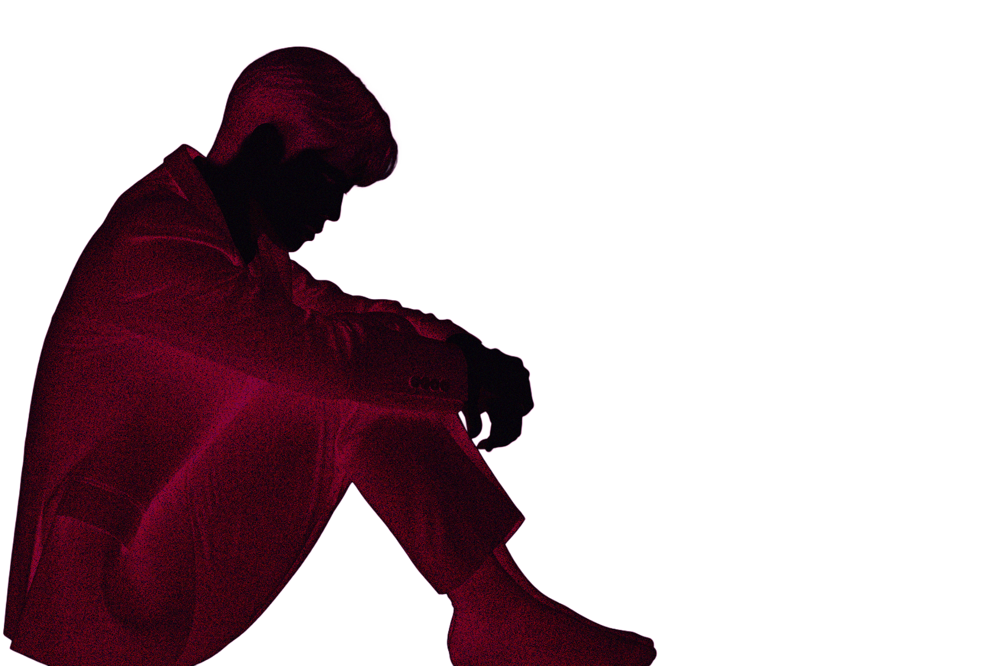
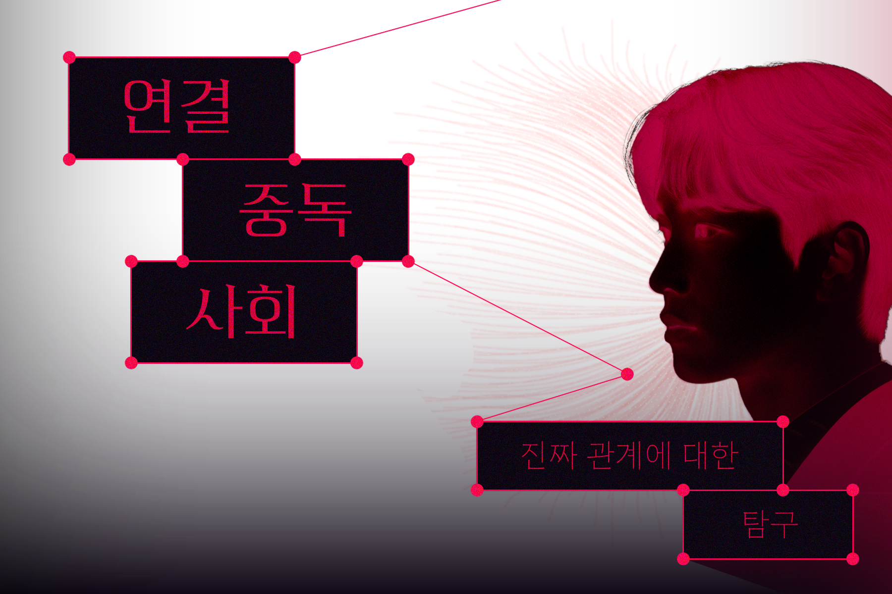

하루를 시작하기 전
우리는 스마트폰을 먼저 보곤 해요
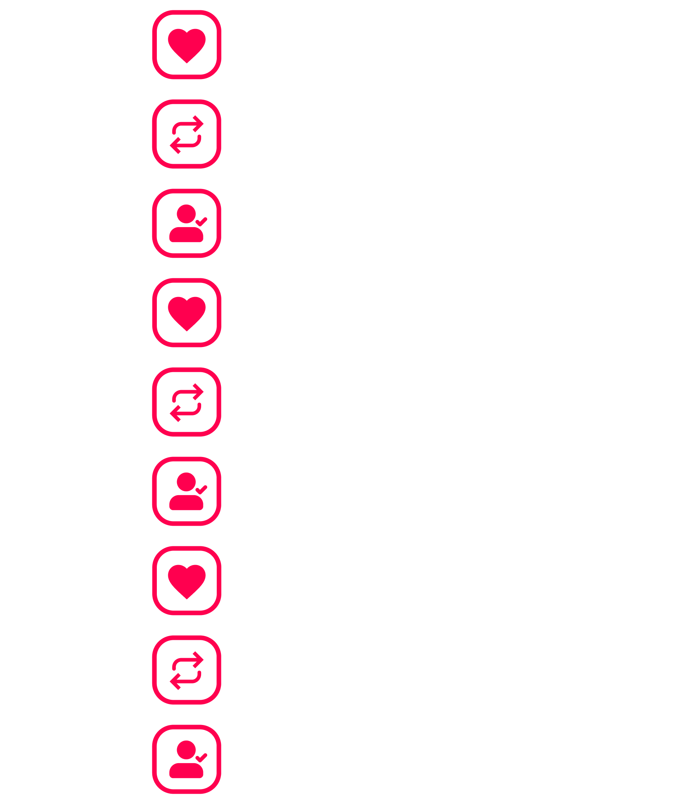
밤새 쌓인 알림, 단톡방의 수십 개 메시지, 타임라인에 올라온 새로운 이야기들, 누군가를 직접 만나지 않아도,
우리는 늘 누군가와 연결되어 있는 것처럼 보여요. 그래서 이제 연락이 닿지 않는다는 것이 불안이 되었고,
항상 연결되어 있는 것이 자연스러운 일상이 되었죠.
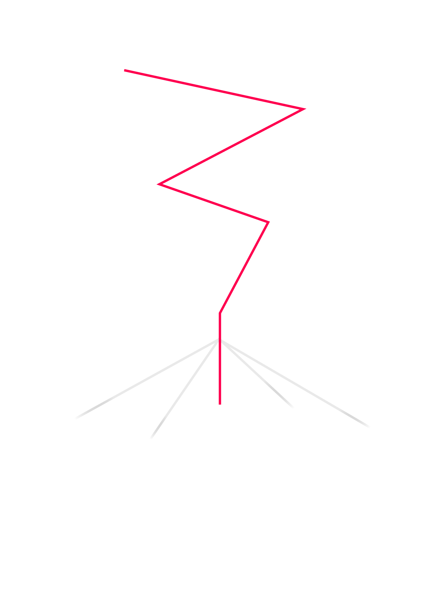
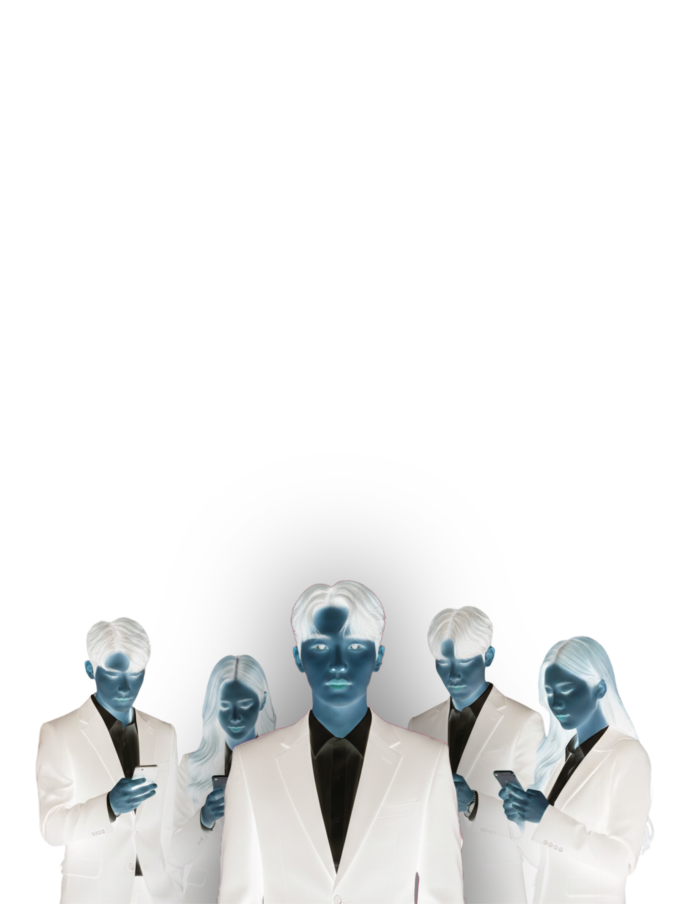
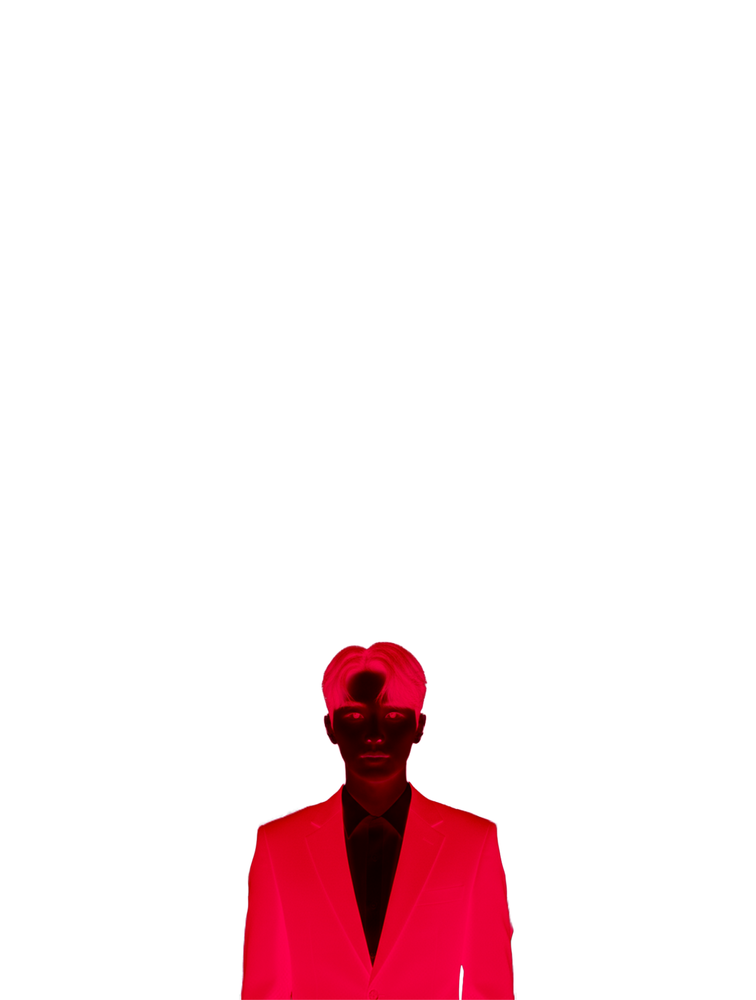

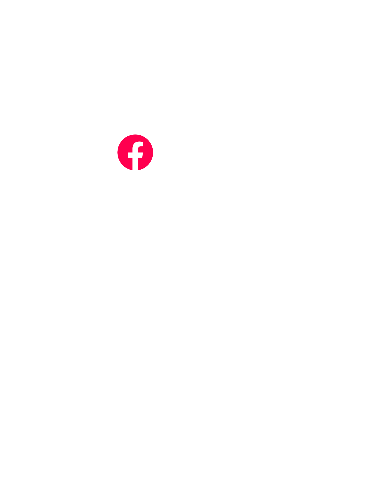
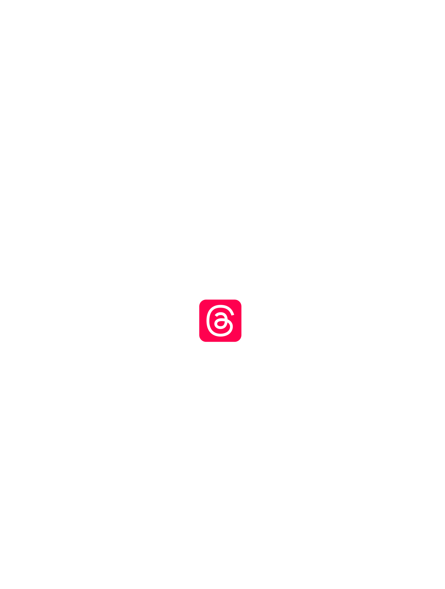

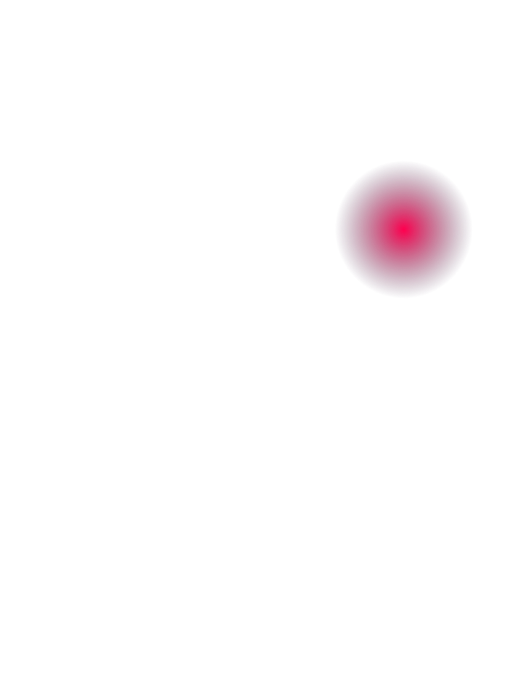
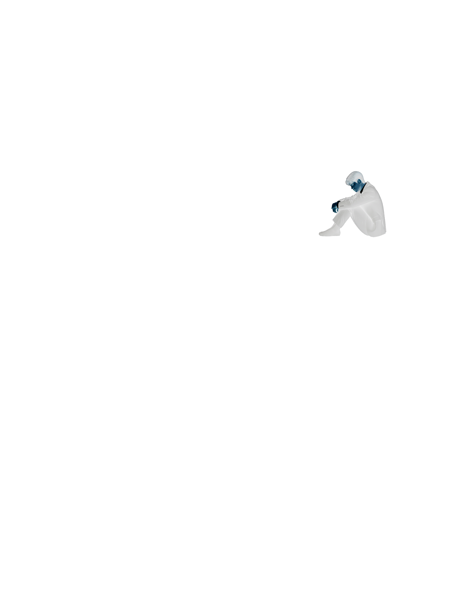
연결이 이렇게 많은데
왜 더 외로운 걸까요?
바로 이 지점에서, 우리가 당연하게 여겨왔던 연결을 다시 바라볼 필요가 생겨요. 우리는 서로의 일상을
실시간으로 알고, 좋아요를 누르고, 스토리에 반응하며 살아가요. 하지만 그런 연결이 나를 위로해주거나,
어려울 때 곁에 있어주는 관계라고 말할 수 있을까요?
“팔로워는 많은데, 같이 밥 먹을 사람은 없다.”
많은 사람들이 느끼고 살아가잖아요. 겉으로는 연결되어있지만, 정작 마음은 여전히 혼자라고
느끼는 순간이 많다는 거죠. 결국 문제는 팔로워가 많냐 적냐 같은 연결의 양이 아니라,
그 연결에 ‘온기'가 있느냐는 것이에요.
한번 물어보자구요
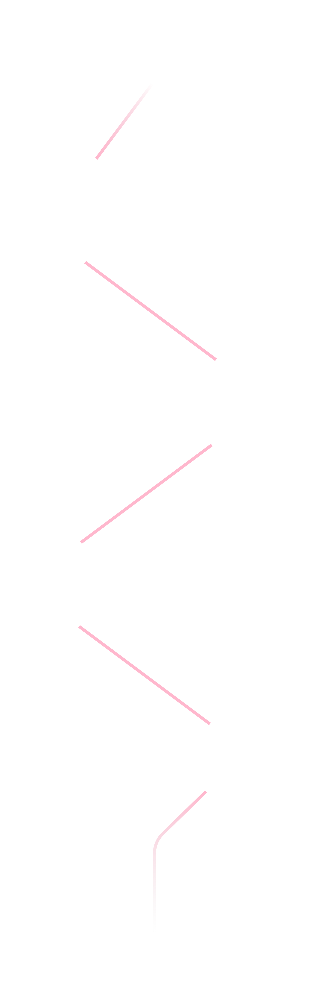
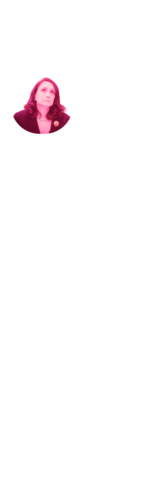

“지금의 연결은 진짜 관계를
대신할 수 있을까요?”
심리학자 셰리 터클은 말했죠.
“우리는 연결되어 있지만, 동시에 혼자다.”
SNS는 사람을 이어주는 도구이지만, 깊은 대화를 대신하는
도구는 아니에요. 연결이 곧바로 관계로 이어지지는 않아요.
사회학자 지그문트 바우만은 말했어요.
“지금 시대의 인간관계는 쉽게 만들고,
쉽게 버릴 수 있는 관계이다.”
물론 모든 것이 부정적인 것은 아니에요. 멀리
있는 가족과 연락할 수 있고, 같은 취미를 가진
사람들과 쉽게 모일 수도 있게 됐어요. 기술은
분명 우리를 이어줬어요. 그 연결이 깊어지지
않아 문제인거죠
철학자 마셜 맥루언은 말해요.
“도구가 바뀌면 관계의 방식도 바뀐다.”
SNS는 연결을 빠르게 만들어주지만, 그만큼
관계의 깊이를 얕게 만들기도 하죠. 속도가
깊이를 대신할 수 없기 때문이에요.
대학생 임광용도 말했어요.
“지금의 연결은 빠를 수록 가벼워지고
깊은 관계는 느림 속에서 자라난다.”
관계를 만드는 건 연결 그 자체가 아니라, 그 사이에 흐르는
느린 시간들이에요. 관계에 시간을 투자하고, 직접 만나보고
깊어지는 순간에서야 진정한 관계가 맺어질 수 있는 거예요.
결국 기술은 관계가 아니라, 관계를 맺는 방식과 속도를 바꿨어요.
그 빠름 속에서, 감정이 따라오지 못하고 있을 뿐이랍니다.
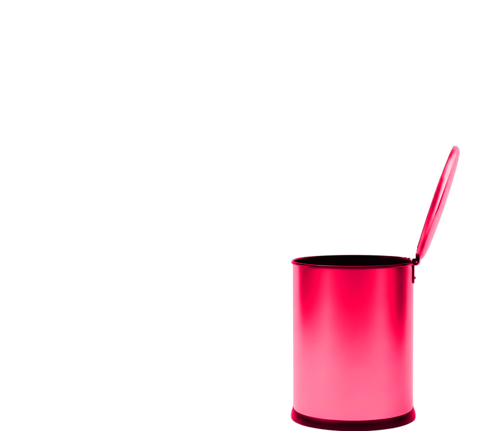
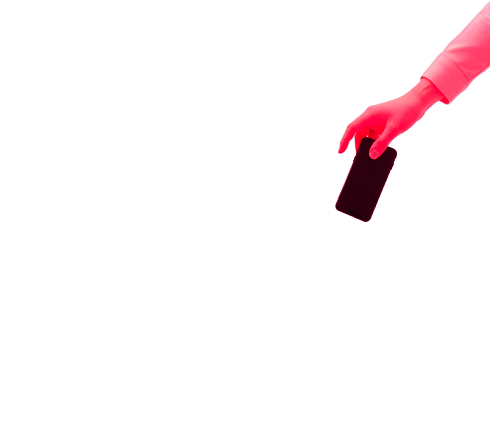
그냥 SNS를 지워버리면
편해지는 거 아닌가요?
현실이 그렇게 단순하지만은 않아요.
우리는 이미 연락, 일정, 친구 관계, 심지어 일까지
이 플랫폼 위에서 이어가며 살고 있잖아요.
SNS를 완전히 끊는 것은 사회에서 ‘사라지는 것’과
비슷하기도 해요. 그래서 문제의 핵심은 “쓸 것인가,
말 것인가”가 아니라 “어떻게 쓸 것인가”에 있다는
거죠. 연결을 없애는 것이 아니라, 연결의 방식을
다시 고르는 일이 필요한 순간이에요.
우리가 잃어버린 것은 함께 시간을 쓰는 방식이에요.
좋아요 하나보다, 진심 담긴 말 한마디가 더 오래 남아요.
알림보다 서로의 목소리, 짧은 대화보다 한 번의 진짜 만남이 마음을 움직이는 법이죠.
그리고 이 만남이 우리의 외로움을 해결해, 몸과 뇌에도 변화를 일으켜 줄거에요.

하버드 정신의학과 교수 에이미 뱅크스는 말해요.
“뇌는 관계 속에서 회복된다.”
타인과의 따뜻한 교류는 옥시토신과 세로토닌을 증가시켜
스트레스를 줄이고, 반대로 고립된 상태는 코르티솔을 높여
불안을 키운다는 거죠. 즉, ‘좋아요’ 하나가 아니라, 진심 어린
한 마디가 우리 정신적 안정에 더 큰 영향을 미친다는 뜻이에요.
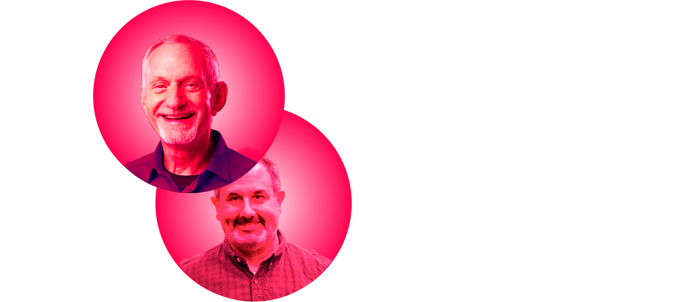
하버드 성인 발달 연구의 로버트 월딩어&마크 슐츠는 말해요.
“행복의 핵심 요인은 돈도,
명예도 아닌, 좋은 인간관계다.”
하버드대의 성인 발달 연구(Grant & Glueck Study)에서
80년 넘게 이어진 조사 끝에 내린 결론이죠. 연구에서 말하는
좋은 관계는 ‘자주 연락하는 사람의 수’가 아니라, 진심으로
믿을 수 있는 사람의 존재로 정의되었어요.
그렇다면 우리가 일상에서 해야 할 일은
거창한 변화가 아니라, 이런 작고 단순한 시도들이겠죠.
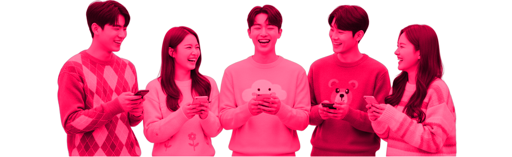
좋은 연결은 기술이 만들어주는게 아니에요. 결국, 사람이 시간을 들이고, 마음을 나누며 만들어내는 것이죠
그 과정이 느리고 서툴러도 괜찮아요. 진짜 관계는 함께 불완전할 수 있는 용기에서 자라니까요.
우리는 누구보다 많이 연결된 세대에요.
하지만 연결의 숫자가 관계의 깊이를 보장해주지는 않아요.
진짜 연결은 마음이 닿는 순간이 있는 관계에서부터 시작돼요.